Special Class Investigators
Special Class Investigators are elite members of the CCG (Commission of Counter Ghoul), known for their exceptional skills in combating ghouls. Here are some prominent members:
CCG/InvestigatorsKishou Arima
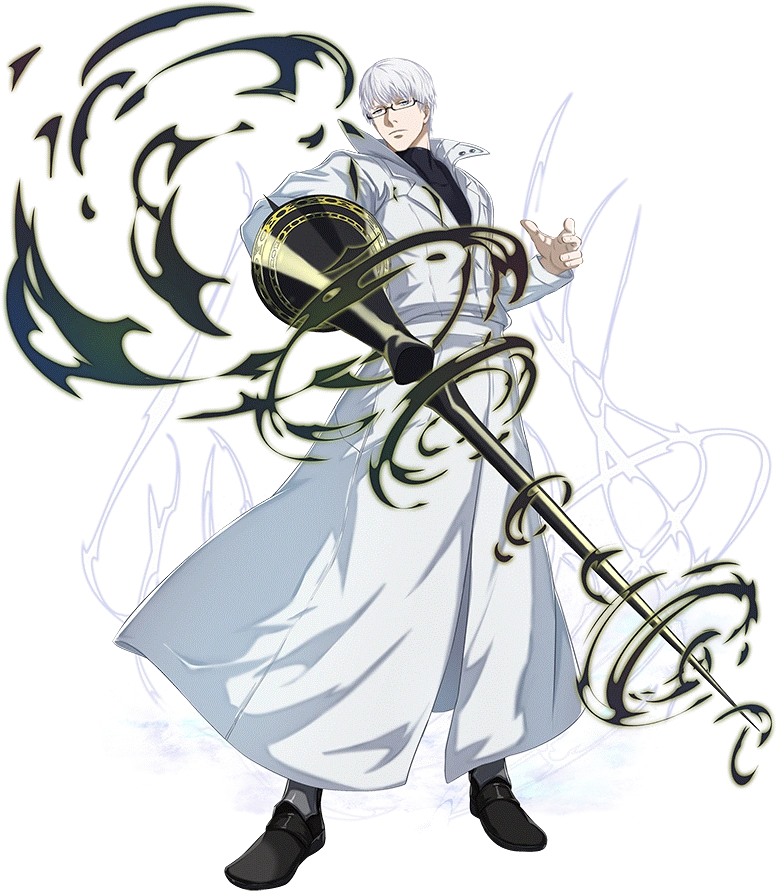
Juuzou Suzuya
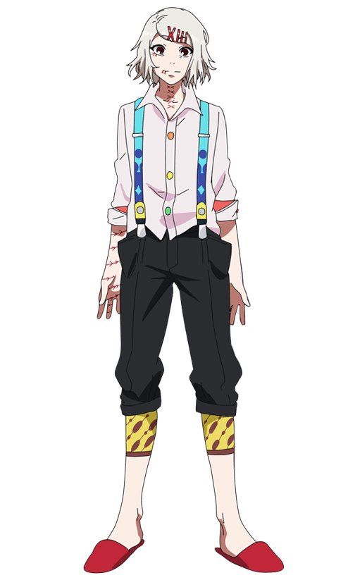
Koutarou Amon
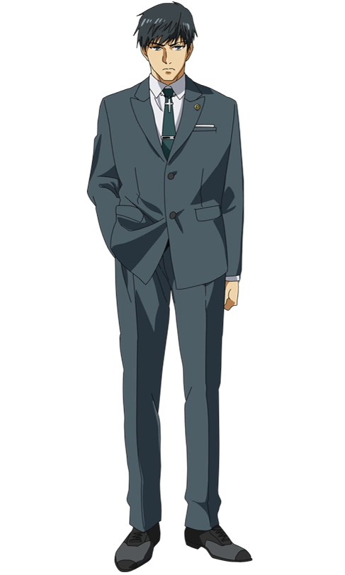
Iwao Kuroiwa
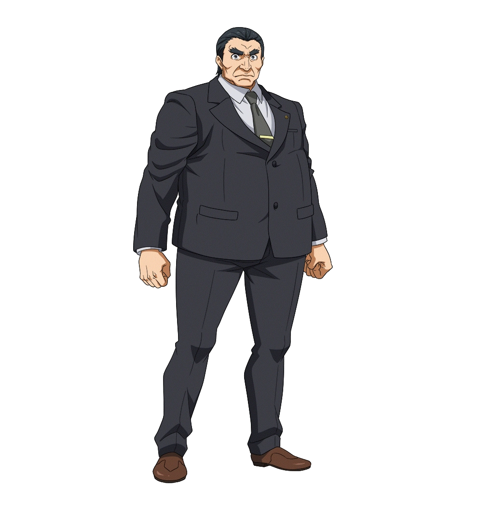
Kureo Mado
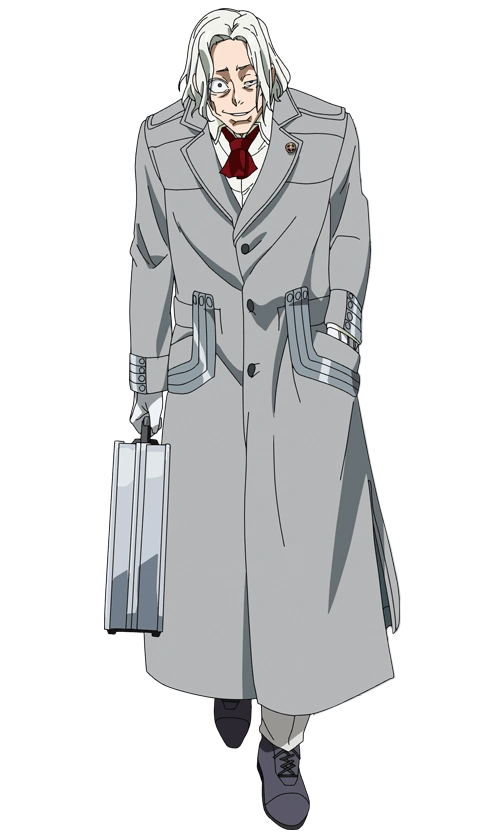
Yukinori Shinohara
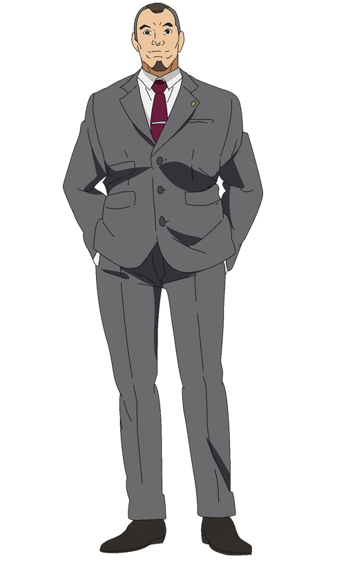
Akira Mado

Seidou Takizawa

Ghouls
Ghouls are creatures that feed on human flesh and have various supernatural abilities. Here are some notable ghouls:
Ghoul/SpecialGhoulsKen Kaneki
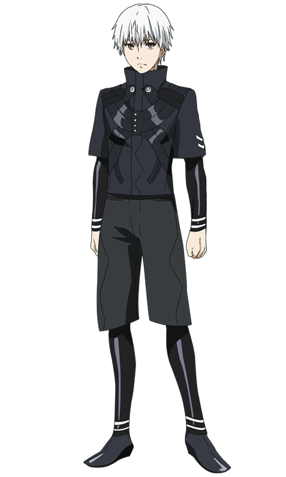
Touka Kirishima
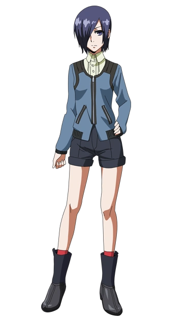
Tatara
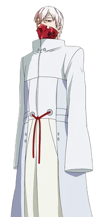
Noro
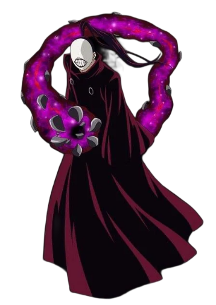
Eto Yoshimura
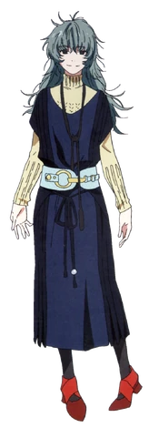
Rize Kamishiro
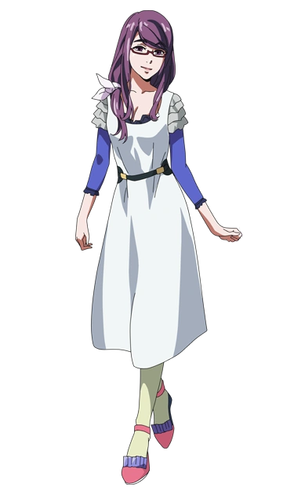
Yakumo Oomor
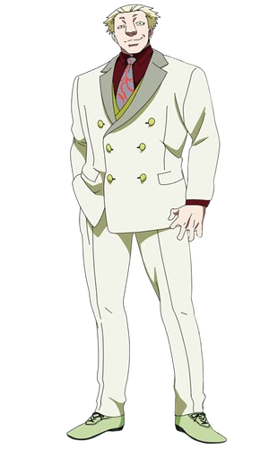
Renji Yomo
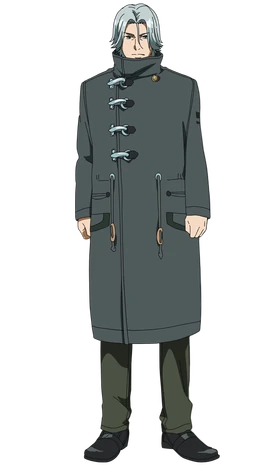
© 2024 Tokyo Ghoul. All rights reserved. Contact us